Liam — El Explorador Visionario
Guardián · Explorador VisionarioGuardián de las historias, del sueño y del pueblo. Su lámpara dorada ilumina el camino en la más densa oscuridad y simboliza la claridad y el propósito.
Toca el texto donde quieres empezar. Escape cancela.
Capítulo 07 • El Gran Libro de Fábulas
“Cuando el cielo se oscurezca y las aves en sombras rodeen el templo, será el momento de revelar lo oculto.”
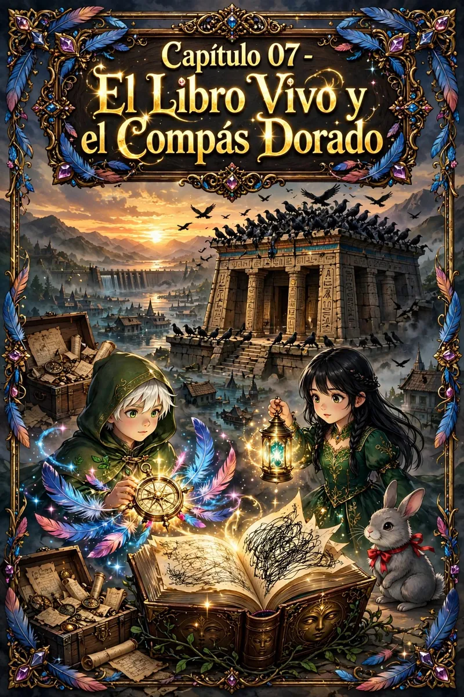
El grano y la paja
Antes de cruzar el umbral del templo, el relato propone una forma de mirar: separar lo que ocurrió de lo que creemos que ocurrió.
Middle grade • Contenido recomendado (+10 años)
Guardián de las historias, del sueño y del pueblo. Su lámpara dorada ilumina el camino en la más densa oscuridad y simboliza la claridad y el propósito.

Su lámpara transforma las sombras en narraciones llenas de sabiduría. Escucha lo que otros callan y enseña el poder del lenguaje para crear realidades nuevas.

Pequeño, ágil y con un lazo rojo al cuello, aparece de forma enigmática y constante: representa la oportunidad de cambio y el crecimiento continuo.
Fichas completas: Liam · Elara · Conejo · Ver todos los personajes
El templo se oscurece, el libro cambia y la brújula señala un camino que aún no tiene nombre.
01 / 07
Pasaje 01Mientras el sol descendía, la atmósfera se cargaba de misterio inquietante. Un enjambre de aves negras, cuyos plumajes absorbían la luz y sumían el paisaje en sombras profundas, descendió sobre el templo. Estas aves, de movimientos precisos y enigmáticos, se posaron sobre el edificio antiguo, como si lo custodiaran con una vigilia silenciosa.
Liam y Elara, con el peso de una inquietante sensación, se acercaron. La luz de sus lámparas mágicas apenas luchaba contra la oscuridad. El templo, estructura de piedra sólida y majestuosa, se alzaba enigmáticamente contra el cielo oscuro.
Su mirada se posó en la brújula dorada que colgaba a su lado. Esta brújula, adornado con plumas azules y rosadas, parecía vibrar con una energía propia, como si estuviera a la espera de algo importante.
“¿Qué está ocurriendo aquí?”
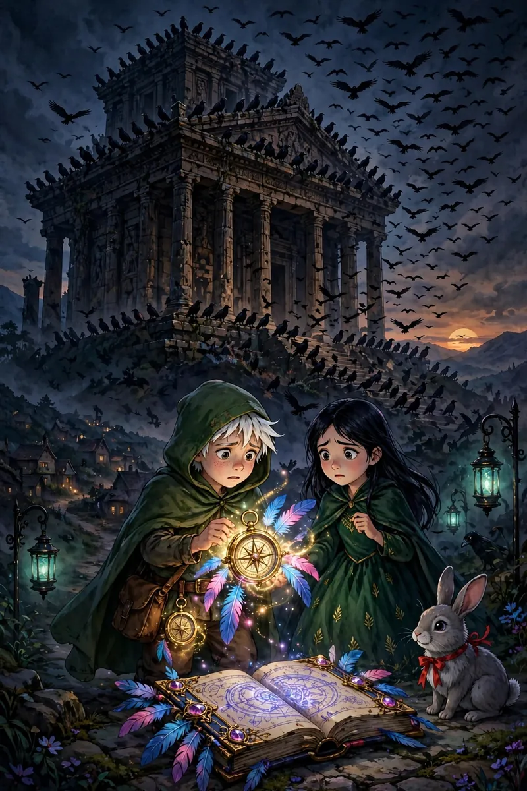
02 / 07
Pasaje 02Al ingresar al templo, se encontraron con el Gran Libro de Fábulas en notable transformación. Las páginas, que solían estar firmemente escritas, ahora estaban en blanco en algunos lugares y cubiertas de una tinta dorada que se volvía negra a medida que se secaba. El libro parecía estar vivo, cambiando su contenido de manera dinámica y continua.
el libro simboliza la naturaleza fluida y en constante evolución de nuestras percepciones y creencias. Nuestras interpretaciones también están en constante cambio. La comprensión personal es un proceso continuo de exploración y adaptación.
“Este libro... no es como lo recordamos. Parece que tiene una voluntad propia.”
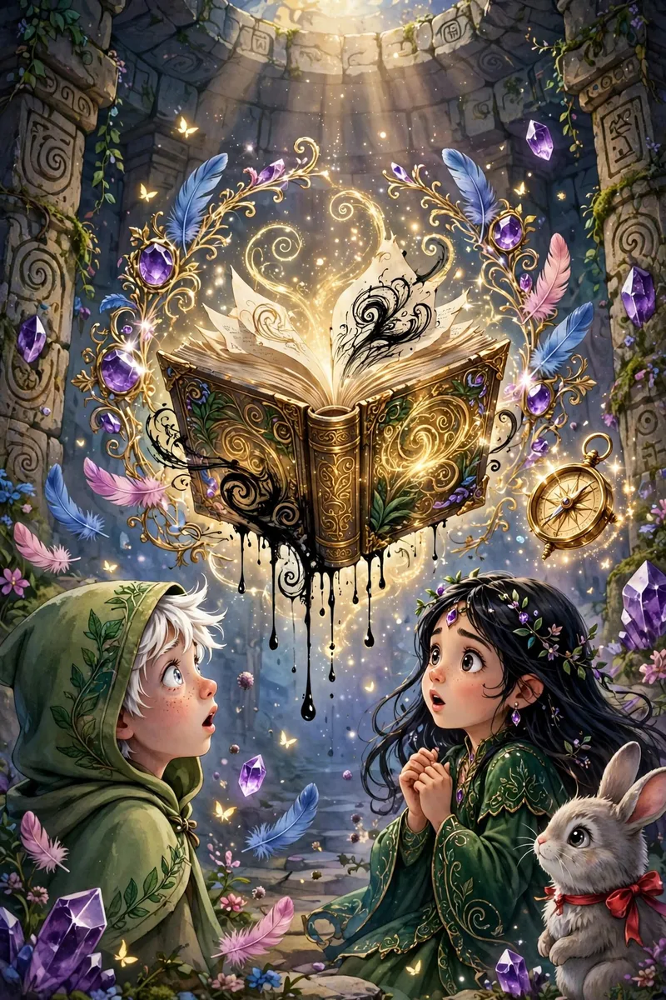
03 / 07
Pasaje 03Mientras exploraban, se toparon con inscripciones antiguas en las paredes. Escrituras muy similares a los jeroglíficos egipcios, talladas en piedra y parcialmente desgastadas por el tiempo. Símbolos complejos y misteriosos, lenguaje que parecía conectar profundamente con la historia del Gran Libro.
escrituras representan conexión con nuestras raíces y conocimiento ancestral. Al descifrarlas, accedían a sabiduría olvidada con claves vitales para comprender su presente. Reconexión con pasado esencial para crecimiento y entendimiento profundo.
“Estas inscripciones... ¿podrían estar relacionadas con el libro? Parece que cuentan una historia que complementa la del libro.”
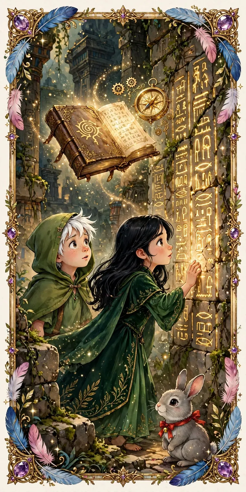
04 / 07
Pasaje 04Mientras descifraban mensajes del libro y las inscripciones, un texto parcialmente escrito en las páginas doradas se hizo visible:
“Cuando el cielo se oscurezca y las aves en sombras rodeen el templo, será el momento de revelar lo oculto. La clave que buscan está en la intersección del pasado y el presente, donde la sabiduría se encuentra con la verdad. La brújula dorada y el libro vivo guardan secretos que solo pueden desvelarse cuando el grano se separa de la paja.”
Este mensaje indicaba necesidad de discernir entre hechos e interpretaciones, principio central del Coaching. Separar el grano de la paja es esencial para claridad. Aves negras y brújula dorada metáforas para discernimiento, revelar verdad oculta detrás de interpretaciones erróneas.
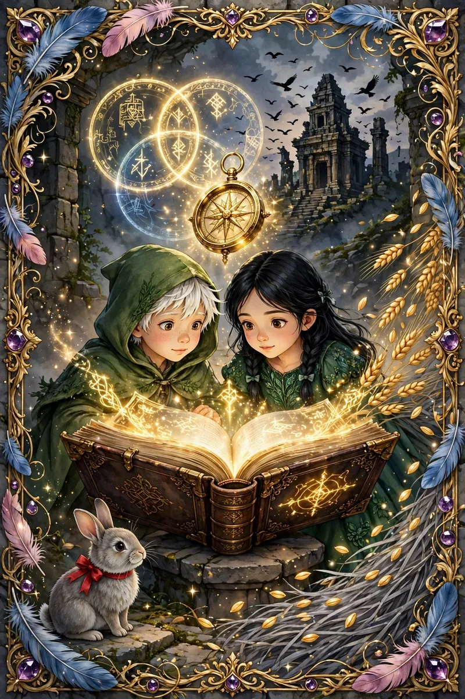
05 / 07
Pasaje 05Con la brújula dorada en mano, notaron que las plumas de la brújula parecían iluminar las páginas del libro de formas nuevas y reveladoras. La luz de la brújula se sincronizaba con los patrones del texto, descubriendo fragmentos ocultos que previamente no eran visibles.
la brújula representa capacidad de integrar diferentes perspectivas para comprensión más completa. Al equilibrar razón y emoción, podemos descubrir verdades más profundas y tomar decisiones más informadas.
“Esta brújula... parece estar guiando la narrativa del libro. Podría ser la clave para entender lo que está pasando.”
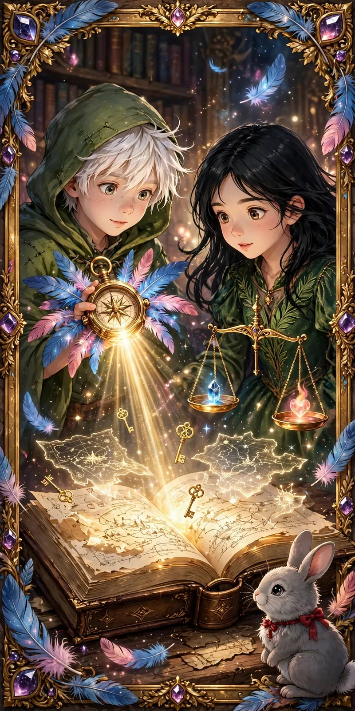
06 / 07
Pasaje 06Mientras continuaban su exploración, un descubrimiento sorprendente emergió. En una cámara oculta del templo, descubrieron un cofre antiguo cubierto de símbolos enigmáticos que coincidían con los jeroglíficos en las paredes. Al abrir el cofre, encontraron documentos, mapas y artefactos con conexión profunda con el pasado del pueblo.
Los documentos contenían fragmentos que hablaban de una antigua presa construida para proteger al pueblo de una amenaza misteriosa. Lo aún más desconcertante fue un mapa detallado que mostraba una parte del pueblo sumergida bajo el agua, una sección olvidada y sepultada con el tiempo.
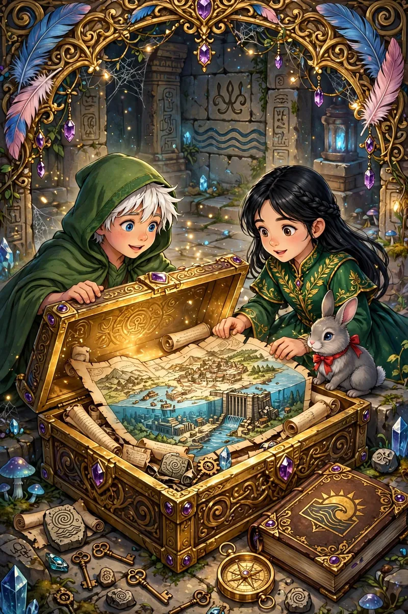
07 / 07
Pasaje 07Al analizar los artefactos, se dieron cuenta de que la presa había sido erigida no solo para proteger, sino también para ocultar algo crucial. Los documentos indicaban que la parte sumergida albergaba secretos ancestrales, conocimientos y objetos de poder sellados con el agua. La construcción de la presa no solo había sido medida defensiva, sino acción deliberada para guardar y proteger algo de gran importancia.
El misterio se profundizó cuando encontraron un pergamino con inscripciones en idioma aún no descifrado. Hablaban de “claves de transmutación” y “guardianes de la sabiduría”, sugiriendo que la presa había sido parte de un ritual más grande destinado a preservar un legado secreto.
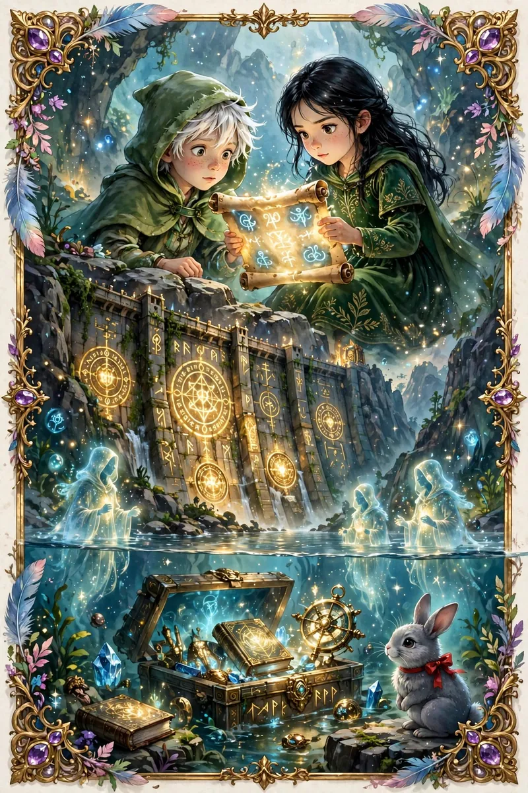
Hechos · Interpretaciones · Verdad
Cada escena del templo es también un espejo. Estas lecturas invitan a mirar el pasado sin confundirlo con el presente.
00 / 07
Coaching ontológicoEn este capítulo se profundiza en la naturaleza enigmática de la realidad, invitándonos a explorar la relación entre el pasado y el presente, el conocimiento ancestral y la sabiduría actual. Desde la perspectiva del Coaching Ontológico, este capítulo nos brinda la oportunidad de reflexionar sobre nuestras propias vidas y los procesos internos que nos llevan a un mayor entendimiento y evolución personal.
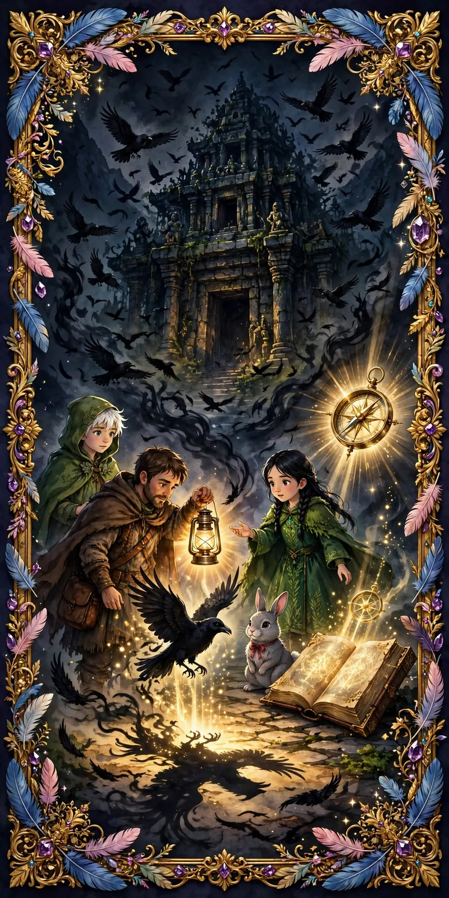
01 / 07
Coaching ontológico • 01La aparición de las aves negras que envuelven el templo en oscuridad simboliza los momentos en que nuestras vidas se ven sumergidas en incertidumbre, temor o duda. Estas sombras pueden representar aspectos de nosotros mismos que hemos reprimido o ignorado, pero que emergen para ser confrontados. En el Coaching Ontológico, enfrentarse a estas sombras es crucial para el crecimiento.
Reflexiona: ¿Qué partes de ti mismo o de tu vida has evitado enfrentar? ¿Cómo podrías iluminar esas sombras para obtener una mayor claridad y paz interior?
02 / 07
Coaching ontológico • 02El Gran Libro de Fábulas que se reescribe a sí mismo es una poderosa metáfora de cómo nuestras creencias y percepciones están en constante cambio. Así como el libro se transforma, nuestras interpretaciones sobre la realidad también evolucionan a medida que adquirimos nuevas experiencias y conocimientos. El Coaching Ontológico nos enseña que debemos estar abiertos a revisar y reevaluar nuestras creencias continuamente.
Pregúntate: ¿Qué creencias antiguas o limitantes podrían estar obstaculizando mi crecimiento? ¿Cómo puedo permitir que mi libro personal se reescriba con nuevas perspectivas?
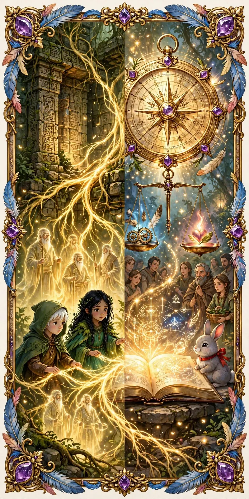
03 / 07
Coaching ontológico • 03Las inscripciones en las paredes del templo representan la sabiduría ancestral y la importancia de reconectar con nuestras raíces. En la vida moderna, podemos estar desconectados de nuestras historias pasadas, tanto personales como colectivas, lo que nos impide comprender plenamente nuestro presente. En el Coaching Ontológico, este proceso de reconexión con el pasado es esencial para entender quiénes somos y hacia dónde vamos.
Reflexiona: ¿Qué aspectos de tu pasado podrían contener lecciones valiosas para tu presente? ¿Cómo puedes integrar esa sabiduría en tu vida actual para avanzar con mayor propósito?
04 / 07
Coaching ontológico • 04La brújula dorada, que ilumina las páginas del libro y revela verdades ocultas, simboliza la capacidad de integrar diferentes perspectivas y discernir la verdad. En el Coaching Ontológico, este proceso de integración es fundamental para tomar decisiones informadas y equilibradas. Al equilibrar la razón y la emoción, la lógica y la intuición, podemos navegar la complejidad de la vida con mayor claridad.
Pregúntate: ¿Cómo puedes usar tu propia brújula interna para guiarte en momentos de confusión o incertidumbre? ¿Qué perspectivas podrías estar ignorando que podrían ayudarte a ver la situación con más claridad?
05 / 07
Coaching ontológico • 05El descubrimiento del cofre antiguo y los documentos secretos que revelan la verdadera historia de la presa es una metáfora de cómo podemos encontrar tesoros ocultos dentro de nosotros mismos cuando nos atrevemos a explorar profundamente. En el Coaching Ontológico, este proceso de exploración interna nos lleva a descubrir recursos, fortalezas y conocimientos que pueden estar ocultos, pero que son esenciales para nuestro desarrollo.
Reflexiona: ¿Qué tesoros internos podrías descubrir si te permites explorar más allá de la superficie? ¿Qué partes de ti mismo aún no has explorado completamente y que podrían contener un potencial significativo?
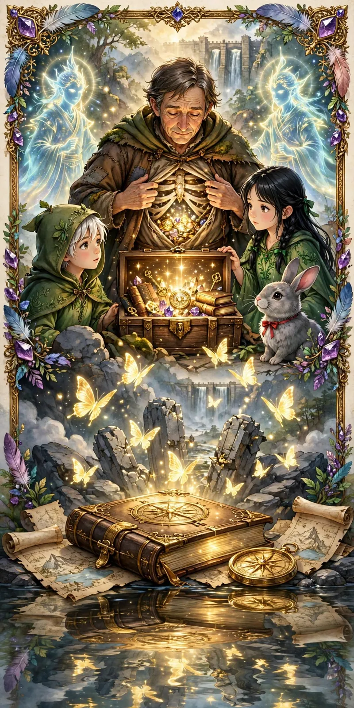
06 / 07
Coaching ontológico • 06El concepto de claves de transmutación y guardianes de la sabiduría alude a la capacidad de transformar nuestras circunstancias, nuestras percepciones y a nosotros mismos. La transmutación, en el Coaching Ontológico, es el proceso de convertir desafíos y limitaciones en oportunidades para el crecimiento y la expansión.
Pregúntate: ¿Qué desafíos actuales podrías ver como oportunidades para tu propia transmutación? ¿Cómo puedes actuar como un guardián de la sabiduría en tu vida, preservando y aplicando las lecciones aprendidas?
07 / 07
ConclusiónEl capítulo El Libro Vivo y la Brújula Dorada nos invita a un viaje de descubrimiento interno y reflexión profunda. A través del Coaching Ontológico, podemos aprender a iluminar nuestras sombras, a permitir que nuestras creencias evolucionen, a reconectar con nuestra sabiduría ancestral, a integrar diversas perspectivas y a descubrir nuestros tesoros internos. Este proceso nos lleva a una transformación personal que nos permite vivir con mayor autenticidad, claridad y propósito.
Separar el grano de la paja · Guardar la sabiduría
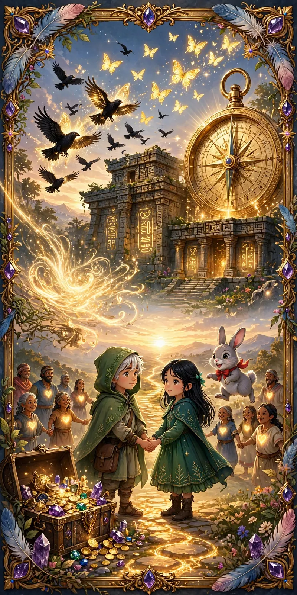
Estampas en pixel art de lo que aparece en «El Libro Vivo y la Brújula Dorada». Toca una para verla más grande.
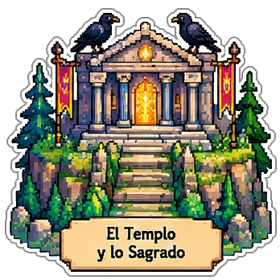
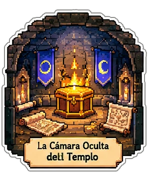
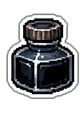
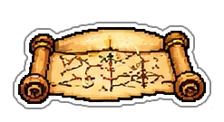
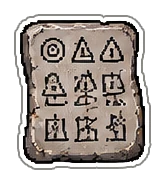
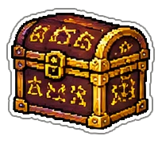
“Separar el grano de la paja. Guardar la sabiduría.”
← Capítulo 07: El Grano y la Paja de la HistoriaVolver al inicio